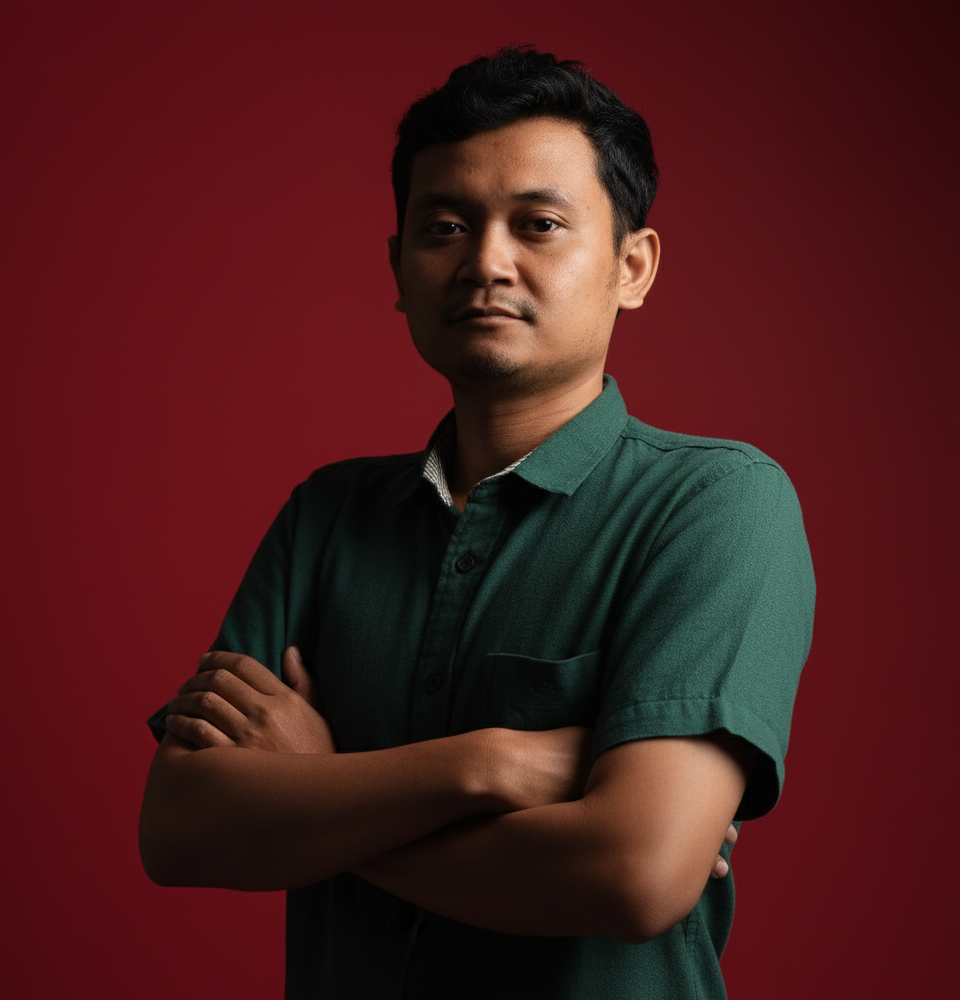

Nama Anda — profesional IT dengan fokus pada IT Support, network engineering, infrastruktur server, dan pengelolaan database. Terbiasa menangani insiden, monitoring uptime, dan menjaga sistem tetap berjalan tanpa gangguan.

Dengan pengalaman IT Support sejak tahun 2017, saya memiliki keahlian mendalam dalam troubleshoot hardware & software, manajemen jaringan, instalasi jaringan, serta pengelolaan Windows Server, Web Server, dan Active Directory, POS Maintenance, saya juga mempunyai keahlian dasar dalam pengembangan web.
Terbiasa bekerja dengan konfigurasi router/switch, manajemen web server, serta mendukung sistem internal perusahaan tetap berjalan optimal dan aman.
Terbuka untuk peluang kerja, kolaborasi, maupun diskusi seputar network engineering dan infrastruktur IT.